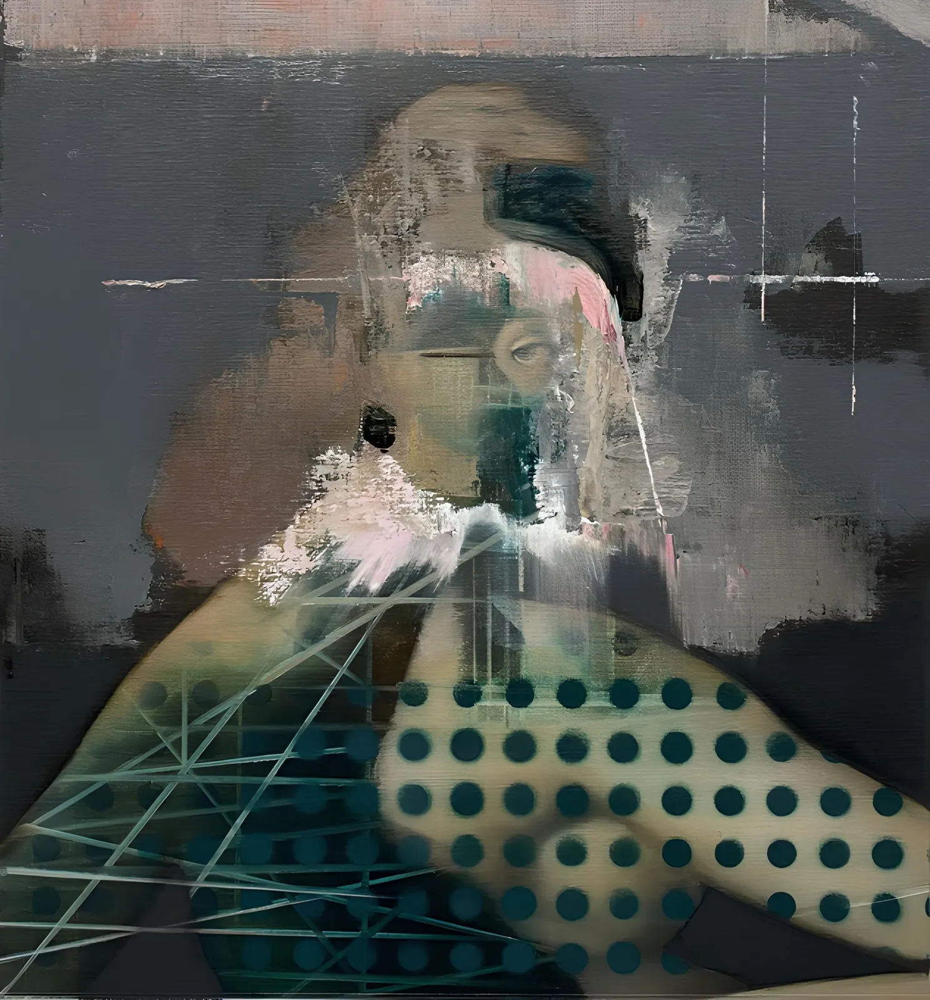

<!doctype html><html lang="tr"><meta charset="utf-8"><meta name="viewport" content="width=device-width,initial-scale=1"><title>TIM KENT - Exhibitions | PİLEVNELİ</title><style>body{margin:0;background:#f6f5f1;color:#1d2327;font:16px/1.6 system-ui,sans-serif}main{max-width:1100px;margin:auto;padding:36px 28px}a{color:#244e8b}h1{font-size:32px;line-height:1.25}img{max-width:100%;height:auto}nav,.notice{padding:14px 20px;background:white;border:1px solid #ddd;border-radius:8px;margin:0 0 24px}nav{display:flex;gap:24px;flex-wrap:wrap}.records_list ul{list-style:none;padding:0;display:grid;grid-template-columns:repeat(auto-fit,minmax(260px,1fr));gap:24px}.records_list li{background:white;padding:16px}.image img{max-height:600px;object-fit:contain}.clear{clear:both}button,input,select{font:inherit;padding:9px 14px;border:1px solid #bbb;border-radius:6px}button{cursor:pointer;background:white}small{color:#667}table{width:100%;border-collapse:collapse}td,th{text-align:left;padding:10px;border-bottom:1px solid #ddd}.tag{font-size:12px;border-radius:5px;padding:3px 8px;background:#e5ebe5}pre{white-space:pre-wrap}</style><main><nav><a href="../arsiv.html">← Arşiv dizini</a><a href="https://web.archive.org/web/20260614003725/https://www.pilevneli.com/artists/82-tim-kent/exhibitions/">Wayback kopyası</a><a href="../texts/ba0d6ccc4488ad50.txt">Düz metin</a></nav><h1>TIM KENT - Exhibitions | PİLEVNELİ</h1><div class="notice">/artists/82-tim-kent/exhibitions/ · Kayıt tarihi: 2026-06-14<br><small>Arşivden kurtarılan içerik. Sayfaların kayıt tarihleri farklıdır. İşlevler ve özgün tasarım birebir korunmamış olabilir.</small></div><div class="clearwithin" id="content">
<div class="subsection-exhibitions detail-section detail-section--exhibitions">
<div class="records_list gd_no_of_columns_3 clearwithin c-records-list grid_dynamic_layout_exhibitions collapse_single_column image_list">
<ul class="clearwithin c-records-list__list">
<li class="c-records-list__item" data-height="2720" data-width="2532">
<a href="https://web.archive.org/web/20260614003725/https://www.pilevneli.com/exhibitions/89-tim-kent-kronos-ve-kairos-pilevneli-dolapdere/overview/">
<span class="image"><span>

</span></span>
<div class="content">
<h2>TIM KENT, CHRONOS AND KAIROS</h2>
<span class="subtitle">PILEVNELI | DOLAPDERE</span>
<span class="date">25 Oct - 2 Dec 2023</span>
<div class="description prose">
<!--excludeindexstart-->
                                                TIM KENT CHRONOS AND KAIROS 25.10 - 02.12 PILEVNELI | DOLAPDERE The art of the past no longer exists as it once did. Its authority is lost. In its place...
                                    <!--excludeindexend-->
</div>
<span class="link"><span class="read_more_label">Read more</span></span>
</div>
</a>
</li>
<li class="c-records-list__item" data-height="3575" data-width="3355">
<a href="70aec2291db5a476.html">
<span class="image"><span>

</span></span>
<div class="content">
<h2>TIM KENT, POSSESSION</h2>
<span class="subtitle">PILEVNELI | YALIKAVAK</span>
<span class="date">8 Aug - 17 Sep 2023</span>
<div class="description prose">
<!--excludeindexstart-->
                                                TIM KENT POSSESSION PILEVNELI | YALIKAVAK 'Paintings show us a way of seeing while at the same time problematizing conviction that our view is the only way to see them.'...
                                    <!--excludeindexend-->
</div>
<span class="link"><span class="read_more_label">Read more</span></span>
</div>
</a>
</li>
</ul>
</div>
</div>
</div></main></html>